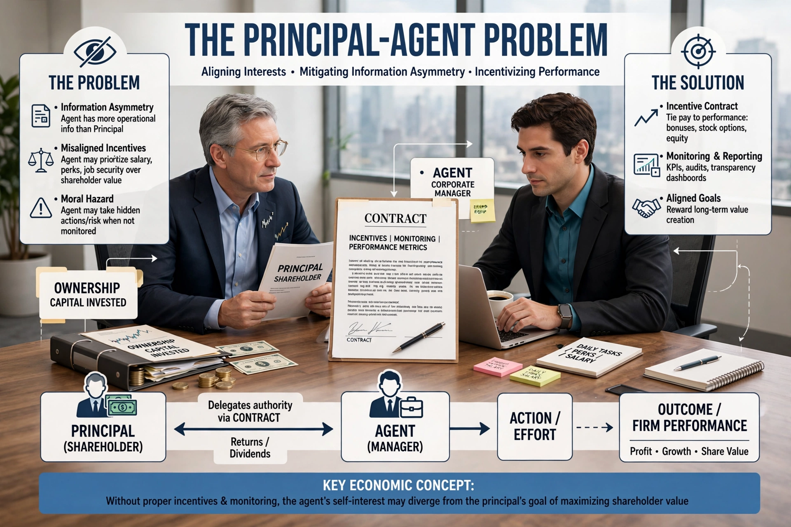

The principal–agent problem refers to the conflict in interests and priorities that arises when one person or entity (the "agent") is able to make decisions and take actions on behalf of, or that impact, another person or entity (the "principal"). It is a central topic in economics, political science and organisational theory, closely related to moral hazard and information asymmetry.
The problem occurs when the agent's goals differ from the principal's and the principal cannot perfectly observe the agent's actions or effort. Examples include shareholders (principals) and corporate managers (agents), voters and politicians, patients and doctors, and clients and lawyers. The resulting losses are called agency costs: monitoring expenditures, bonding costs, and residual loss.
Proposed remedies include incentive contracts such as performance pay and stock options, monitoring and auditing, reputation in repeated relationships, and aligning ownership — though each remedy can create new distortions, such as short-termism or risk-shifting. The theory was developed in the 1970s by writers including Stephen Ross and by Jensen and Meckling's 1976 theory of the firm.